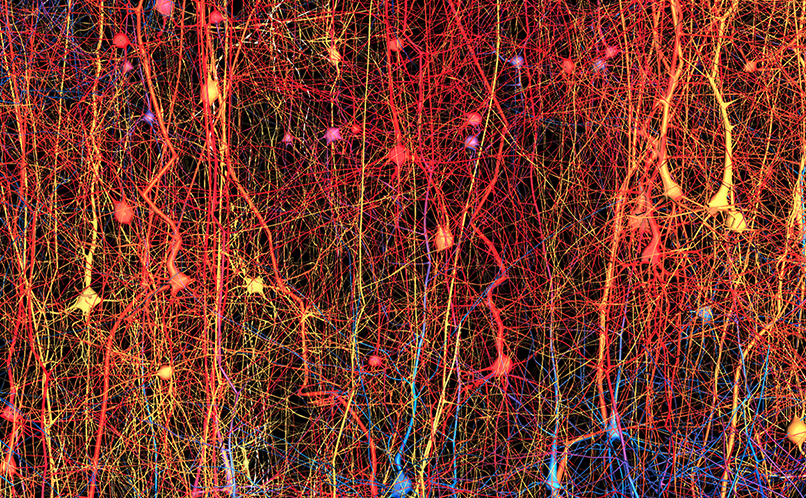
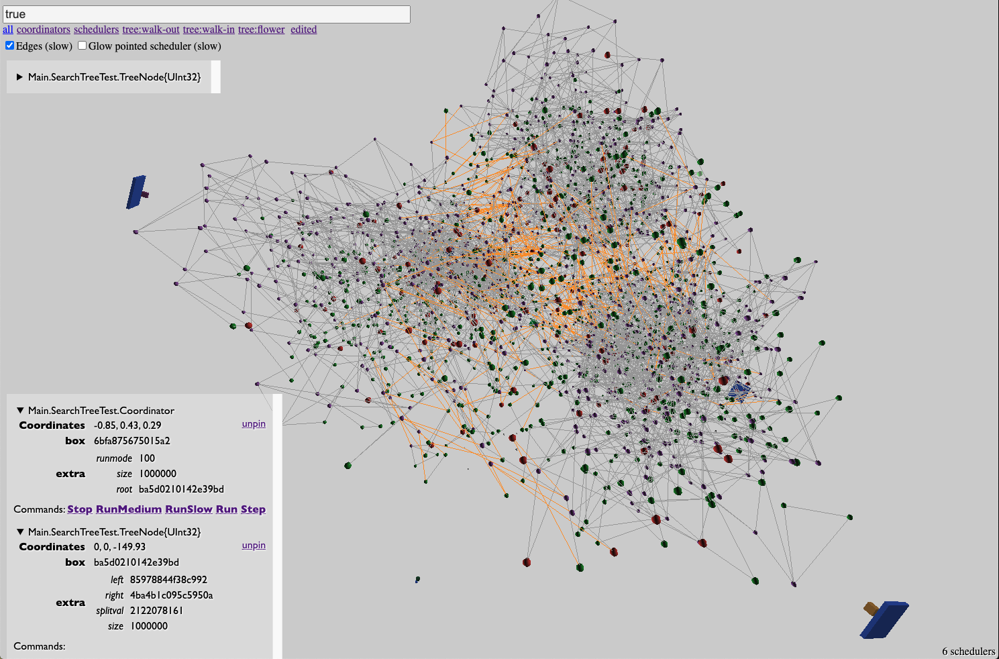

Circo Intro
Schäffer Krisztián
Goal: Close the gap
|  |  |
| Brains | Deep Learning | |
|---|---|---|
| Representation | Sparse | Dense |
| Structure | Feedback loops | Layers (DAG) |
| Learning | Local | Global |
| Timing | Async | Synchronised |
| Scale | 1015 | 1011 (2021) |
Vision:
Incorporating sparsity into deep learning
- Outer model:
- Sparse
- Async
- Feedback loops
- Agency
- Built from dense DL bricks
- Local learning
Actor Model
- Model of concurrent computation
- Actors
- share nothing
- are stateful
- and reactive
- Asynchronous messaging
- Location transparency
- Physics inspired
- The system grows from a spawn
Demo
Infoton Optimization
Plans
Stabilization, Documentation
Support async and blocking
Persistence
Higher level language (macro DSL)
Infoton Optimization Research